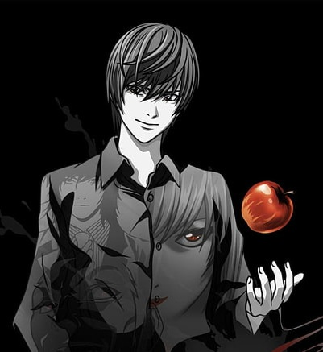
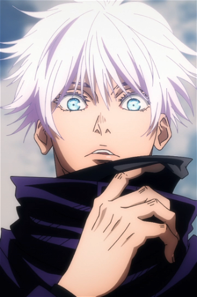
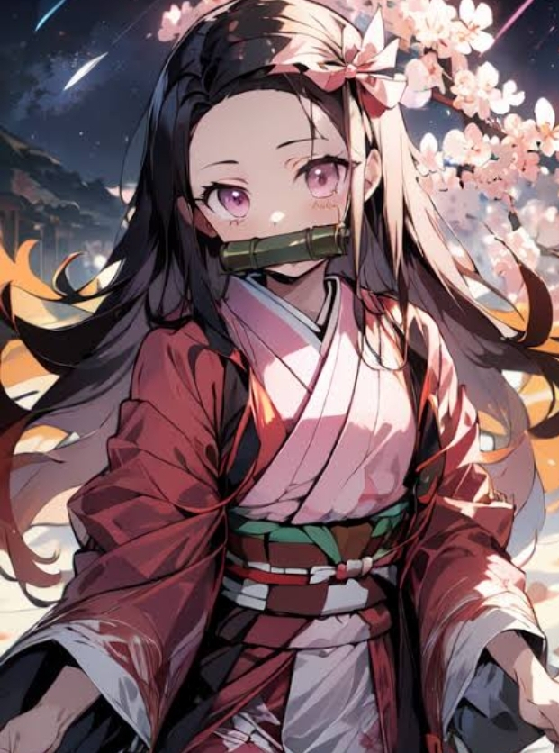
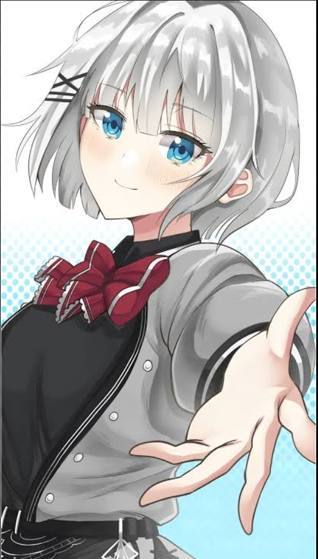

Some Of My Fav Anime Characters
One Of My Favroite Anime Character is Gojo

LIGHT YAGAMI
Light Yagami (Japanese: 夜神 月ライト, Hepburn: Yagami Raito) is the main protagonist of the manga series Death Note,
created by Tsugumi Ohba and Takeshi Obata. He is portrayed as a brilliant but bored genius who finds the Death Note,
an otherworldly supernatural notebook that allows the user to kill anyone by knowing their name and face,after it is dropped by the Shinigami Ryuk.
Frustrated by the status quo and unfairness of the world,Light uses the Death Note to kill those whom he deems morally unworthy of life, masterminding a worldwide massacre as the vigilante Kira (キラ).
Over the course of his efforts to create a world free of crime and evil, wherein he would rule and reign as a godlike figure, Light is pursued by a special task-force,
headed by a consulting detective known as L;upon eventually befriending and murdering him, Light takes over as the new L.
Despite his intellect and intentions, Light has an overwhelming sense of pride, needing to be seen as the smartest man in the room and believing he can never get caught.
Eventually he becomes mad with power and becomes a remorseless serial killer, having taken thousands of lives.

GOJO
Satoru Gojo (Japanese: 五条 悟, Hepburn: Gojō Satoru) is a fictional character from Gege Akutami's manga Jujutsu Kaisen. He was first introduced in Akutami's short series
Tokyo Metropolitan Curse Technical School as the mentor of the cursed teenager Yuta Okkotsu at Tokyo Prefectural Jujutsu High School
This miniseries became the prequel Jujutsu Kaisen 0 of Jujutsu Kaisen.In Jujutsu Kaisen, Gojo takes the same role but mentors the student Yuji Itadori who suffers a similar Curse, helping him become stronger while protecting other characters in the series
Gojo was designed by Gege Akutami to be a formidable yet endearing figure who is passionate about his students.
He is voiced by Yūichi Nakamura in Japanese and Kaiji Tang in English in the animated adaptations by MAPPA.
The character was well received by the media for his carefree nature and power shown when protecting his students,
becoming the seriess breakout character. Furthermore, his role in the prequel Jujutsu Kaisen 0 was appreciated by the media due to his hidden depths such as his relationship with the antagonist Suguru Geto.
He is a jujutsu sorcerer and widely recognized as the strongest in the world. Satoru is the pride of the , the first person to inherit both the in four hundred years. He works as a teacher at the Tokyo Jujutsu High and uses his influence to protect and train strong young allies.
Abilities and Powers. Battles & Events.

NEZUKO
Nezuko Kamado (Japanese: 竈門 禰豆子) is a fictional character in Koyoharu Gotouge's manga series Demon Slayer: Kimetsu no Yaiba.
Nezuko and her older brother Tanjiro Kamado are the sole survivors of an incident through which they lost their entire family due to the Demon King, Muzan Kibutsuji
with Nezuko being transformed into a demon, but unexpectedly still showing signs of human emotion and thought. After an encounter with Giyu Tomioka, a demon slayer,
Tanjiro begins his quest to help his sister turn back into a human and avenge the death of his family.Nezuko's character was created to make Tanjiro's character more complex,
as he struggles to reconcile with his sister being a demon.Critical response to Nezuko has been positive due to how unconventional it was for the narrative to have her kind of character as a demon,as well as how her fighting abilities adapt and grow as the series progresses.

SIESTA
A mysterious woman and self-proclaimed "master detective" who owns a musket and seven items with magical abilities.
Her motto is to solve criminal cases before they happen. Until her death, Siesta was a member of the Twelve Tuners,
an organization of twelve people who want to save the world from chaos. Originally, Siesta was just a minor character in the series.
After Nigojūs manuscript won the top prize in the MF Bunko Newcomer Award,
she eventually became one of the main characters in the novel series.